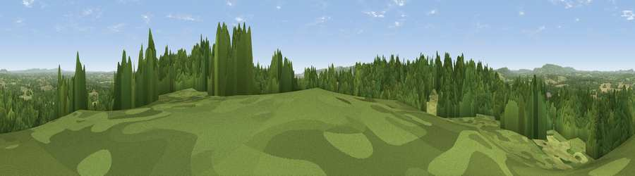

Viewpoint near Petworth
#15710 in England · top 28% of its area beats it · near PetworthThe view, rendered

A 360° render of this exact spot computed from the terrain model, tree cover and land cover — summer colours, afternoon light, calibrated against photographs of famous viewpoints. Real trees, hedges and buildings will differ in detail.
The panorama
Grey silhouette: terrain skyline in each direction (720 bearings, Earth curvature and refraction included). Dashed green: skyline with trees (+15 m) and buildings (+8 m) as obstacles. Blue strip: how far the ground is visible on each bearing.
Where the view opens
Wedge length = distance to the farthest visible ground on that bearing (vegetation-aware). Rings at 10, 25 and 50 km.
What fills the view
60% woodland · 27% grassland · 12% cropland
Angular shares of the visible panorama (visual magnitude), not map area. Landscape diversity 0.42 (0–1 Shannon).
Key numbers
More beautiful places nearby
The staircase of upgrades: each row has a higher view potential than everything closer. Driving times are estimates from straight-line distance, calibrated against real road routing — check an actual route before setting out.
| Place | Direction | Drive | Score |
|---|---|---|---|
| Viewpoint near Fittleworth | E · 1 km | ~3 min | 62.2 |
| Viewpoint near Stopham | ESE · 2 km | ~5 min | 65.4 |
| Barlavington Down | SSW · 8 km | ~16 min | 77.3 |
| Bignor Hill | SSW · 9 km | ~18 min | 84.4 |
| Linch Down | WSW · 16 km | ~28 min | 85.2 |
| Chanctonbury Ring | SE · 17 km | ~30 min | 87.0 |
| Firle Beacon | ESE · 51 km | ~72 min | 88.9 |
| Viewpoint near Niton | SW · 69 km | ~92 min | 89.2 |
50.99161, -0.57332 · source: screening · position refined by local search. Computed location — check access rights before visiting.